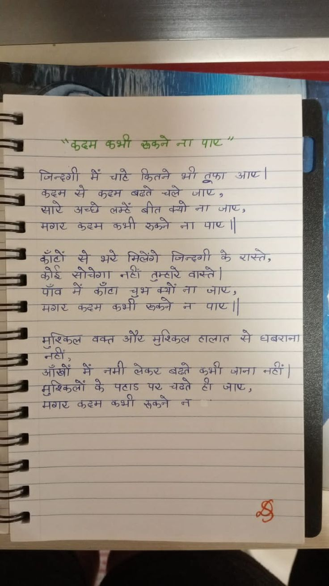

File: hin_sample_15.jpg

"कदम कभी रुकने ना पाए" जिन्दगी में चाहे कितने भी तूफा आए। कदम से कदम बढ़ते चले जाए, सारे अच्छे लम्हें बीत क्यो ना जाए, मगर कदम कभी रुकने ना पाए || काँटों से भरे मिलेंगे जिन्दगी के रास्ते, कोई सोचेगा नहीं तुम्हारे वास्ते। पाँव में काँटा चुभ क्यो ना जाए, मगर कदम कभी रुकने न पाए || मुश्किल वक्त और मुश्किल हालात से घबराना नहीं, आँखों में नमी लेकर बढ़ते कभी जाना नहीं। मुश्किलों के पहाड़ पर चढ़ते ही जाए, मगर कदम कभी रुकने न
"कदम कभी रुकने ना पाए" जिन्दगी में चाहे कितने भी तूफा आए । कदम से कदम बढते चले जाए, सारे अच्छे लम्हों बीत क्यो ना जाए, मगर कदम कभी रुकने ना पाए ॥ काँटों से भरे मिलेंगे जिन्दगी के रास्ते, कोई सोचेगा नहीं तुम्हारे वास्ते। पाँव में काँटा चुभ क्यों ना जाए, मगर कदम कभी रुकने न पाए॥ मुश्किल वक्त और मुश्किल हालात से धबराना नहीं, आँखों में नमी लेकर बढ़ते कभी जाना नहीं। मुश्किलों के पहाड पर चढ़ते ही जाए, मगर कदम कभी रुकने न శ్రీ
AY |) | Ym AA MIAN | hi! — | —y *कदम BHT wea AT IC ” : jaca f —i जिन्दगी ae St Gar आए | — से Hey बढते ज्वले जाए + 4 सारे अच्छी at बीत क्यो ना जाए, बज मगर कदम कभी ger जा पाए | Ese सै भरे मिलेंगी जिन्दगी के रास्ते: —g कोई सोचेगा er Grey वास्ते | 22 ja में कौटा खुश क्यों ना जाए; a —— सर करम कभी ऊमकतने ना पा८ || es —s मुश्किल वक्त sie मुश्किल ठालात से aa oe >> ae : : कं आँखों मैं नमी लेकर gat कभी जाना नदी | >> pact के पठाडइ ye aes oe, i ‘l ig मगर कदम कप्मी रूकने ला 7 |
ine हि व Albom Soe “4 Mt, ea i) "ee Ue Ce 7 Al JUNE TAT caren वाया अर ae | oN ॥॥॥ (aa HU 77 Lig हि Sf parent eer फोर्स ही ja ४ ey Pe a Ee alison aie ar ete . ee hore 777 3 न को पते aS le गज हो आदि मिलेंगी Pe a | | की oe 9 a मल =o? A = a तप See EL A ee | ve किन yess eg eile सुश्किल cere Saree 2 : cece INE ASE = eal 7 ee ea की ज्ानोपसटी 4) peal or yes मिट व्येक्ती ही Se a a | =i (sl nad ne | Ll oo aN fo
कशी पार कदम रूकने जिन्दगी कितने आए | तफा बढते जाए कदम करम बीत अच्छे लम्हें सारे कभी पाए मगर केरम जिन्दगी के काँटों भरे रास्ते , कोई वास्ते | तन्टारे पाए | और धबरान माश्कल टालात वक्त नटीं जाना नटीं चढते के जाए् , पर मूश्किलों कभी रूकने कदम मगर
❌ OCR Failed
आंदुज्ञ
मकुद्टम कुभी दफने न। पग् जिन्हगी में चांटे फितने भी ट्रफा आपट कुद्िन से कुव्टम बढते चल्चे जााष्श्र सारे अचधे लम्हें बीत क्यो जन ज्ञाप्टर-श मवाष्ट कुष्हन कुभी फ़ुकने ना। पाराष्ठ ब्ाट।े ई४ से भरे मिजेंगरी जिन्द्गी कै ज्ाज्तर बेगोर्ब् जट जोचेगा। जिि पॉब में काटा शिर नटी तुम्हाचेट ़ वास्ते चुभाक्यों ज। जाण्र मवाग्ट बुष्टिम कुभी फ़ुकन नन पाण्ट ग्ोंश्वत् बबत औटि मुरिकत्व गाबात जे धबब्ाव। ऑग्ों ४४ मैँ नमी लेकर-बदूरे कूभी जााजा नटीं मुरिएलों कै पटार्ऽ प्रष्ठ चढते टी जणर ननछार निठा्ठ बक्न कुभी फ़ुकने पन
कुहमकभी ककहम क्भी रुकनेना पाट पा जिन्दगी म़ चाटे कितन भी रफा आप सरे कठम अची ग कहम बढते चते जा तकें बीत को ना पा्पण जाट मगर कुहम कभी रुके ग कॉँंटों ग भ मिलेंगे जिन्दगी ग ए्ते कोर सोचेशा नटी तूम्टारे वास्ते पॉव ग काँटा क्भी चभ षकने क न पाष्ण जाण मरार करम ग मशकिल वक्त ऑ॰ मिरिकिल तालात ग घबराना आँबों नहींग ग तमी लेकर बढ़ते कुभी जाना नवीं मुश्किलों भ पटाड प चटते ग जाट मगर कदम कर्भी रुकने ग